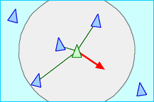
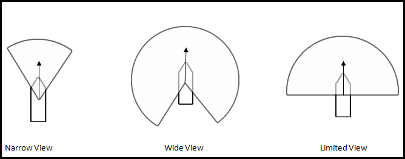
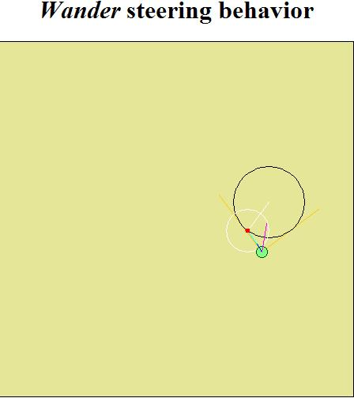

Research
Research
Here are some of the Links to the References we used during our research:
http://www.red3d.com/cwr/papers/1987/boids.html
http://www.red3d.com/cwr/boids/
FLOCKING BEHAVIOUR
Craig Reynolds coined the term boids when referring to his simulated flocks. The behavior he generated very closely resembles shoals of fish or flocks of birds. All the boids can be moving in one direction at one moment, and then the next moment the tip of the flock formation can turn and the rest of the flock will follow as a wave of turning boids propagates through the flock. Reynolds’ implementation is leaderless in that no one boid actually leads the flock; in a sense they all sort of follow the group, which seems to have a mind of its own. The motion Reynold’s flocking algorithm generated is quite impressive. This algorithm is the result of 3 simple behaviors which are as follows:
Cohesion:
Have each unit steer toward the average position of neighbors.

Alignment:
Have each unit steer so as to align itself to the average heading of its neighbors.

Separation:
Have each unit steer to avoid hitting its neighbors.

FLOCKING BEHAVIOR PARAMETERS

- View Angle: This parameter decides the visibility of the unit and hence determines its neighbors.
- Separation Factor: This parameter decides how far the apart the units in the flock should be.
- Radius Factor: Specifies the radius of the visibility.
The above research is based off the following articles and publications:
- http://www.red3d.com/cwr/boids/ by Craig Reynolds.
- AI for Game Developers by David M. Bourg & Glenn Seemann.
WANDER RESEARCH
The primary research for wander behavior used in current generation games is from the GDC 1999 paper on “Steering Behaviors for Autonomous Characters” by Craig Reynolds.

Here is a link to the paper : http://www.red3d.com/cwr/papers/1999/gdc99steer.html
Wander is a type of random steering which steers the character/vehicle in a direction in one frame and then in another direction related to the original direction in the other frame. This produces a realistic wandering effect and the image shown above is taken from a live applet from http://www.red3d.com/cwr/steer/Wander.html